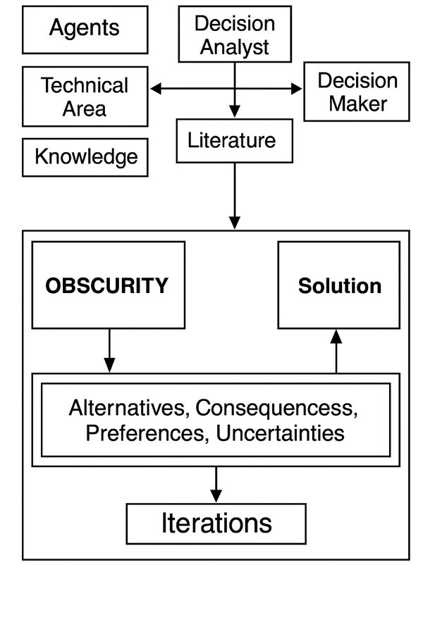
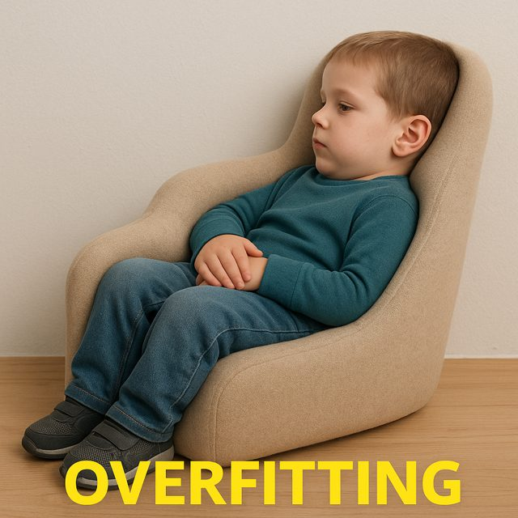

| name | site | age | sofa | lactate | map_min | baseline_creat | protocol_adherence | crp | albumin |
|---|---|---|---|---|---|---|---|---|---|
| Aoife Byrne | ICU_B | 71 | 6 | 2.1 | 66 | 1.0 | 0.72 | 95 | 2.7 |
| Tomás Ruiz | ICU_A | 54 | 3 | 1.2 | 78 | 0.9 | 0.85 | 45 | 3.4 |
| Priya Nair | ICU_D | 38 | 12 | 4.1 | 54 | 1.5 | 0.55 | 190 | 2.2 |
1 Dados, modelos e decisões
Abaixo estão cinco coisas que Emma e Seán têm diante de si esta noite. Classifique cada uma como dados (um fato registrado), modelo (uma representação de como as coisas se relacionam), informação (o que um modelo nos diz sobre este caso) ou decisão (uma escolha entre ações). Arrisque seu melhor palpite: o capítulo explica cada termo.
| Item | Seu rótulo |
|---|---|
| "O lactato de Aoife é 2,1 mmol/L." | |
| Os prontuários de 1.250 pacientes de UTI anteriores, de quatro hospitais. | |
| "O aumento da creatinina depende da gravidade da doença, da pressão arterial e da função renal basal, além de alguma variação não explicada." | |
| "Espera-se que a creatinina de Aoife aumente cerca de 0,3 mg/dL nas próximas 48 horas." | |
| Iniciar o pacote de proteção renal esta noite ou reavaliar pela manhã. |
Como usar este capítulo
Começando por aqui?
Este é o primeiro capítulo, então não pressupõe nada. Se você chegou ao livro por causa de um tema mais adiante, vale a pena ler duas partes deste capítulo mesmo assim, porque todos os outros capítulos se apoiam nelas: os quatro exemplos recorrentes (Seção 1.1) e a base de decisão com seu limiar (Seção 1.5). Cada capítulo posterior as retoma brevemente no seu próprio quadro Começando por aqui?.
Este capítulo constrói o vocabulário de todo o livro: dados, modelos, decisões e o que entendemos por inteligência artificial e aprendizado de máquina. Ele tem doze seções e um Lab, oito verificações rápidas, três widgets “Experimente”, um desafio e três missões de programação em R e Python. Reserve cerca de 90 minutos. Você ainda não precisa saber programar: as missões dizem exatamente o que digitar.
Notação em resumo (apenas para consulta)
| Símbolo | Significado | Seção |
|---|---|---|
| \(n\), \(p\) | número de instâncias (linhas), número de atributos (colunas) | Seção 1.7 |
| \(\mathbf{x}_i\), \(y_i\) | atributos e desfecho da instância \(i\) | Seção 1.7 |
| \(f\) | a relação verdadeira, desconhecida, entre atributos e desfecho | Seção 1.4 |
| \(\varepsilon\) | erro: a parte do desfecho que os atributos não explicam | Seção 1.4 |
| \(\hat f\), \(\hat y\) | um modelo ajustado e sua predição (“chapéu” = estimado) | Seção 1.4 |
| \(\mathcal{A}\) | o conjunto de alternativas de uma decisão | Seção 1.5 |
| \(\mathcal{K}\) | o estado de conhecimento de quem decide | Seção 1.5 |
| \(p_{\text{LRA}}\) | probabilidade de um paciente desenvolver lesão renal aguda | Seção 1.5 |
A lista completa está na página de notação.
1.1 Quatro exemplos recorrentes
Ao longo do livro voltamos sempre às mesmas quatro situações. Elas vêm de cantos diferentes da saúde, para que você veja a mesma ideia funcionando em lugares distintos, e crescem junto com o livro: a tabela que você conhece hoje vira um problema de predição, depois um risco com incerteza, depois um conjunto de dados com lacunas, uma nuvem de pontos em muitas dimensões, grupos de pacientes, um modelo explicado, uma pergunta causal, um fluxo de texto clínico e, por fim, uma decisão apoiada por um modelo de linguagem. Os quatro conjuntos de dados são simulados (não descrevem nenhuma pessoa real) e podem ser baixados, junto com o código que os gerou, no apêndice de dados.
| Exemplo 1 UTI Ala 7 | Exemplo 2 Ensaio ONCO-1 | Exemplo 3 HomeBeat | Exemplo 4 CellWorks | |
|---|---|---|---|---|
| Área | Medicina hospitalar, farmácia | Oncologia, terapias avançadas | Dispositivos vestíveis, ensaios digitais | Fabricação de terapias celulares e gênicas |
| Unidades | 1.250 pacientes de UTI, 4 hospitais | 1.000 pacientes randomizados (de 10.000) | 500 participantes remotos | 420 lotes de produção |
| O que se mede | escore de gravidade, lactato, pressão arterial, marcadores renais e inflamatórios | tratamento, dose, grau tumoral, 50 genes (de 2.000) | frequência cardíaca, variabilidade da frequência cardíaca, temperatura da pele, atividade | dias de cultivo, desvios de temperatura e pH, viabilidade, transdução |
| Desfecho | variação da creatinina em 48 h | redução do tumor (%) | escore de estresse, evento de deterioração | escore de potência |
| Pergunta típica | Quem está em risco de lesão renal aguda, e o que a equipe deve fazer esta noite? | A quimioterapia funciona, para quem, e quais genes importam? | Um relógio inteligente consegue sinalizar a deterioração precocemente? | Quais fatores do processo determinam a potência? Por que um lote falhou? |
| Rostos que você vai conhecer | Aoife, Tomás e Priya; a Dra. Emma Walsh; Seán, o farmacêutico | pacientes #0042 e #0917 | Lena, cujo relógio para de enviar dados | lote CW-118, reprovado no teste de liberação |
Exemplo 1: UTI Ala 7 é o nosso exemplo principal. A lesão renal aguda (LRA) é uma perda súbita da função renal, comum em pacientes críticos; um aumento da creatinina sérica de pelo menos 0,3 mg/dL em 48 horas é um dos critérios internacionalmente aceitos para defini-la (Kidney Disease: Improving Global Outcomes (KDIGO) Acute Kidney Injury Work Group 2012). O conjunto de dados registra, para 1.250 pacientes anteriores, o que se sabia na admissão (idade, o escore SOFA de falência orgânica (Vincent et al. 1996), lactato, a menor pressão arterial, marcadores renais e inflamatórios, o grau de cumprimento do protocolo assistencial) e o que aconteceu com a creatinina nas 48 horas seguintes. Esta noite há três pacientes novos na unidade, e ninguém sabe ainda o que vai acontecer com eles:
Exemplo 2: ONCO-1 é um ensaio randomizado no qual pacientes com tumores sólidos foram alocados, por sorteio, para quimioterapia ou nenhuma quimioterapia. O tamanho do tumor foi medido antes e depois do tratamento, e a expressão de 2.000 genes foi registrada. Exemplo 3: HomeBeat acompanha 500 pessoas em casa que usam um relógio inteligente como parte de um ensaio descentralizado (conduzido em grande parte fora do ambiente clínico). Exemplo 4: CellWorks registra 420 lotes de produção de uma terapia celular; cada lote precisa passar em um teste de potência antes de poder ser administrado a um paciente.
Imagens também são dados. Quando chegarmos às redes neurais (Capítulo 7), uma quinta fonte se juntará aos quatro exemplos: radiografias de tórax pediátricas rotuladas como normal ou pneumonia, extraídas da coleção pública PneumoniaMNIST (Yang et al. 2023; Kermany et al. 2018). Elas estão descritas no apêndice de dados.
Em qual exemplo recorrente a atribuição da exposição principal foi decidida pelos pesquisadores, e não pelas circunstâncias?
1.2 Vivendo na era dos dados
Definição 1.1 (Dados) Dados são representações registradas de fatos, observações ou medições sobre objetos, eventos ou fenômenos: números de um sensor, anotações em um prontuário, pixels de uma imagem, palavras de uma carta de alta, a sequência de bases de uma fita de DNA. Sozinhos, são símbolos; tornam-se informação quando interpretados em um contexto.
Vivemos em uma era de abundância de dados. Nas últimas décadas, o custo de computação e de armazenamento caiu, enquanto a capacidade de coletar, transmitir e analisar informação cresceu em ordens de grandeza (Hilbert e López 2011). As ciências da vida são um caso marcante: genômica, transcriptômica, proteômica e metabolômica produzem descrições massivas e de alta resolução dos sistemas biológicos (Stephens et al. 2015; Hasin, Seldin, e Lusis 2017). Na saúde, prontuários eletrônicos, resultados laboratoriais, exames de imagem, sensores vestíveis e perfis ômicos oferecem, em conjunto, uma visão multidimensional de cada paciente (Jensen, Jensen, e Brunak 2012; Hripcsak e Albers 2013).
O desafio já não é apenas coletar dados, mas integrar fontes heterogêneas em evidências coerentes e confiáveis para predição, tratamento personalizado e apoio à decisão clínica (Raghupathi e Raghupathi 2014; Karczewski e Snyder 2018), mantendo o cuidado seguro, justo e transparente (Topol 2019). Na UTI Ala 7, por exemplo, o prontuário de Aoife já reúne um escore de gravidade, a leitura de um gasômetro, um monitor de pressão arterial e resultados laboratoriais, cada um produzido por um sistema diferente.
1.3 De onde vêm os dados: observação e experimento
Os métodos de IA e de aprendizado de máquina dependem da qualidade e da natureza dos dados usados para treiná-los. A maior parte dos dados em saúde vem de um de dois tipos de processo.
Definição 1.2 (Dados observacionais e experimentais) Dados observacionais são registrados à medida que as coisas acontecem, sem intervenção do pesquisador: prontuários, registros de doenças, fluxos de dispositivos vestíveis, arquivos de imagens, registros de fabricação. Dados experimentais são gerados quando o pesquisador atribui tratamentos, condições ou exposições de acordo com um delineamento, de experimentos in vitro e estudos em animais a ensaios clínicos randomizados e controlados.
Os dados observacionais oferecem amplitude e realismo: mostram como os tratamentos se comportam na prática de rotina, em toda a variedade de pacientes e ao longo de períodos extensos; por isso são essenciais para monitorar a segurança de novas terapias após a aprovação (Sherman et al. 2016). Os dados experimentais oferecem rigor: como o pesquisador controla quem recebe o quê (idealmente por randomização), eles são a base mais sólida para afirmar que um tratamento causa um efeito (Hernán e Robins 2020), e formam a espinha dorsal das avaliações regulatórias de novas terapias avançadas.
Os dois tipos são complementares. Um modelo de risco pode ser desenvolvido com dados observacionais e depois testado em um ensaio; um ensaio pode sugerir quais pacientes se beneficiam, e os dados observacionais mostram então se isso se confirma na prática. Nos nossos exemplos, UTI Ala 7, HomeBeat e CellWorks são observacionais; o ONCO-1 é experimental. Guarde essa distinção: na Seção 1.10 veremos que ela determina quais perguntas um modelo é capaz de responder.
Uma farmacêutica hospitalar extrai dos prontuários todos os pacientes que receberam vancomicina no ano passado, com a função renal antes e depois. Que tipo de dado é esse?
1.4 Modelos: representações da realidade
Observe a Figura 1.1. À esquerda há um cilindro cortado na diagonal. Visto de pontos de vista diferentes, ele aparece como uma elipse (de baixo), um triângulo (de lado) ou um arco arredondado (de frente). Cada uma dessas formas planas representa o mesmo objeto sólido, cada uma preserva algumas de suas características e perde outras, e cada uma se apoia em pressupostos: por exemplo, o de que um objeto tridimensional pode ser resumido por uma sombra bidimensional. Outra palavra para representação é modelo.

Definição 1.3 (Modelo) Um modelo é uma representação simplificada de uma parte da realidade, construída com um propósito e apoiada em pressupostos. Vários modelos podem representar a mesma realidade; eles podem ser comparados pelo quanto servem bem a esse propósito.
Modelos podem ser desenhos, fluxogramas ou réplicas físicas. Neste livro, eles são sobretudo matemáticos. Comece pelo menor conjunto de dados que se pode imaginar (Tabela 1.3): cinco pessoas para as quais registramos se têm uma doença cardíaca, o seu nível de atividade e a sua idade, junto com a frequência cardíaca e a saturação de oxigênio no sangue (SpO2). Esta tabela é uma evidência factual sobre um pequeno pedaço da realidade, o equivalente ao cilindro cortado da Figura 1.1.
| Pessoa | Condição | Atividade | Idade | FC (bpm) | SpO2 (%) |
|---|---|---|---|---|---|
| P01 | Healthy | Rest | 52.4 | 73 | 98.9 |
| P02 | HeartCondition | Moderate | 73.1 | 88 | 93.4 |
| P03 | HeartCondition | Rest | 61.2 | 73 | 95.8 |
| P04 | HeartCondition | Moderate | 36.0 | 90 | 94.0 |
| P05 | Healthy | Rest | 53.7 | 72 | 98.0 |
A partir dessa única realidade, poderíamos construir muitas representações, dependendo do nosso objetivo. Suponha que queremos explicar a frequência cardíaca e a SpO2 usando o restante da informação. Podemos escrever
\[ (\text{frequência cardíaca},\ \text{SpO}_2) = f(\text{condição},\ \text{atividade},\ \text{idade}) , \qquad(1.1)\]
o que diz que os dois desfechos são alguma função \(f\) da condição, da atividade e da idade. Tal como está, a Equação 1.1 é uma função matemática: pressupõe que não há erro. Mas duas pessoas com a mesma condição, a mesma atividade e a mesma idade raramente têm exatamente a mesma frequência cardíaca: a biologia, fatores não medidos e o erro de medição têm todos o seu papel. Acrescentar um termo de erro a transforma em um modelo estatístico,
\[ (\text{frequência cardíaca},\ \text{SpO}_2) = f(\text{condição},\ \text{atividade},\ \text{idade}) + \text{erro} , \qquad(1.2)\]
que, na notação geral do livro, se escreve
\[ y = f(\mathbf{x}) + \varepsilon , \qquad(1.3)\]
em que \(y\) é o desfecho, \(\mathbf{x}\) reúne as características usadas para explicá-lo, \(f\) é a parte sistemática e \(\varepsilon\) (épsilon) é a parte que as características não explicam (James et al. 2021, cap. 2). A verdadeira \(f\) é desconhecida. A maior parte do restante deste livro trata de diferentes maneiras de definir a função que liga o que queremos explicar ao que usamos para explicá-lo, ou seja, de estimar \(f\) a partir dos dados. Uma estimativa é escrita com um chapéu, \(\hat f\), e sua predição para uma pessoa é \(\hat y = \hat f(\mathbf{x})\). Na UTI Ala 7, a mesma ideia se escreve \(\text{variação da creatinina} = f(\text{SOFA}, \text{lactato}, \text{pressão arterial}, \dots) + \varepsilon\), e você mesmo pode construir uma \(f\) desse tipo.
Construa seu próprio modelo da UTI Ala 7. Cada ponto é um dos 1.250 pacientes anteriores: o escore SOFA na admissão e a variação da creatinina em 48 horas. Seu modelo é uma reta, \(\hat y = a + b \times \text{SOFA}\). Mova os controles deslizantes para escolher \(a\) e \(b\). O erro absoluto médio (MAE, do inglês mean absolute error) é a distância média, em mg/dL, entre a sua reta e os pontos: quanto menor, melhor. Aqui cada reta é avaliada em todos os 1.250 pacientes, os mesmos pontos pelos quais ela passa: ainda não há divisão em treino e teste (a Seção 1.8 introduz uma). Nesses pacientes, o modelo mais simples possível (ignorar o SOFA e prever a variação média para todos) tem um MAE de cerca de 0,24. Meta: deixar seu MAE abaixo de 0,20.
Repare em três coisas. Primeiro, muitas retas diferentes são representações plausíveis dos mesmos dados: os modelos são comparáveis, e precisamos de um critério (aqui, o MAE) para compará-los. Segundo, mesmo a melhor reta deixa a maioria dos pontos fora dela: essa dispersão é o \(\varepsilon\). Terceiro, a sua reta se apoia em um pressuposto: o de que a relação é linear e de que o SOFA sozinho basta. Os capítulos seguintes flexibilizam ambos.
Em \(y = f(\mathbf{x}) + \varepsilon\) para a UTI Ala 7, qual das opções abaixo o \(\varepsilon\) não inclui?
Conheça os dados da UTI Ala 7. O conjunto de dados já está carregado para você como icu. Use uma única função para descobrir quantos pacientes (linhas) e variáveis (colunas) ele tem.
A função é a abreviação de dimensions (dimensões): três letras.
dim(icu)O atributo descreve o formato (em inglês, shape) da tabela.
icu.shape1.5 Decisões
Observe a encruzilhada da Figura 1.2. Um viajante que para diante da placa pode virar à esquerda, virar à direita, seguir em frente ou dar meia-volta. Só é possível tomar um caminho de cada vez; cada um leva a um lugar diferente; e o viajante pode conhecer bem, mal ou nada as consequências de cada caminho.

White (1969) transformou essa intuição em uma definição. Uma decisão é um processo claramente identificável que resolve um estado de ambiguidade (várias alternativas, das quais só uma pode ser escolhida) dentro de um estado de conhecimento sobre suas consequências. Escrevendo \(\mathcal{A}\) para o conjunto de alternativas e \(\mathcal{K}\) para o conhecimento de quem decide,1 uma decisão é a passagem
1 White escreve \(Q\) e \(K\). Usamos \(\mathcal{A}\) e \(\mathcal{K}\) porque \(Q\), \(K\) e \(k\) terão outros significados mais adiante no livro (consultas e chaves em um transformer, o número de clusters, o número de partições).
\[ (\mathcal{A}, \mathcal{K}) \longrightarrow a \in \mathcal{A}, \]
isto é, de um conjunto de alternativas e do que sabemos sobre elas para uma alternativa escolhida \(a\).
Definição 1.4 (Decisão) Uma decisão é a escolha de uma alternativa \(a\) dentro de um conjunto de alternativas mutuamente exclusivas \(\mathcal{A}\), feita com base no estado de conhecimento \(\mathcal{K}\) de quem decide sobre as consequências dessas alternativas, que geralmente é incerto.
Na UTI Ala 7, esta noite, \(\mathcal{A} = \{\text{iniciar o pacote},\ \text{cuidado padrão}\}\). O conhecimento \(\mathcal{K}\) inclui as medições de Aoife, a experiência clínica de Emma, as diretrizes e, se conseguirmos construir um, a estimativa de risco de Aoife dada por um modelo. A saúde e as tecnologias terapêuticas avançadas estão repletas de decisões assim: escolher uma estratégia de tratamento; planejar um ensaio (quem é elegível, qual dose, qual desfecho primário); escolher entre uma terapia gênica, uma terapia celular e um medicamento; manter ou suspender uma terapia conforme os biomarcadores mudam; alocar leitos de UTI ou órgãos; liberar ou rejeitar um lote fabricado; avaliar se uma nova tecnologia vale o seu custo; e avaliar se um sistema de apoio à decisão baseado em IA é seguro o bastante para ser usado.
As teorias da decisão se dividem em três grandes famílias (Bell, Raiffa, e Tversky 1988), resumidas na Tabela 1.4.
| Normativa | Descritiva | Prescritiva | |
|---|---|---|---|
| Pergunta | Como um agente idealmente racional deveria decidir? | Como as pessoas de fato decidem? | Como pessoas reais podem decidir melhor? |
| Base | Axiomas de racionalidade, utilidade esperada | Observação; heurísticas, vieses, racionalidade limitada | Princípios normativos adaptados a restrições reais |
| Áreas típicas | Economia, teoria da decisão | Psicologia cognitiva | Engenharia, pesquisa operacional, gestão de riscos, medicina |
Este livro adota a visão prescritiva e, em particular, a da análise de decisão: a disciplina que aplica a teoria da decisão a problemas práticos para que tomadores de decisão reais, com tempo e atenção limitados, possam construir decisões sólidas (Howard 1966a, 1988). Ela às vezes é chamada de engenharia de decisão (Sarti 2013, 2015).
1.5.1 A base de decisão
A análise de decisão organiza um problema em uma base de decisão: uma formulação explícita das alternativas, de suas consequências, das preferências de quem decide entre essas consequências e das incertezas que as ligam (Howard 1988; Sarti 2013). A base pode ser escrita como uma tabela, desenhada como uma árvore de decisão ou um diagrama de influência (Howard e Matheson 2005) e é construída de forma iterativa: especialistas técnicos, um analista e os tomadores de decisão trocam conhecimento, partindo de um problema obscuro, até que a base esteja clara o suficiente para orientar a ação (Figura 1.3).

Spetzler, Winter, e Meyer (2016) descrevem seis elementos da qualidade da decisão: (1) um enquadramento adequado, (2) alternativas criativas, (3) informação relevante e confiável, (4) valores e compensações claros, (5) raciocínio sólido e (6) compromisso com a ação. Uma decisão é tão forte quanto o seu elemento mais fraco. O elemento 3 é onde os modelos entram: o papel deles é fornecer informação relevante e confiável sobre as incertezas. Essa é a motivação prática de tudo o que vem a seguir.
A corrente da qualidade da decisão (adaptado de Spetzler, Winter, e Meyer 2016). Uma decisão é tão forte quanto o seu elo mais fraco; o elo 3, onde os modelos fornecem informação, aparece sombreado.
Olhando adiante: a IA como participante de toda a corrente
Hoje, uma divisão de trabalho razoável é esta: a IA pode fortalecer o elo 3 (informação) e o elo 5 (raciocínio, conferindo cálculos e coerência), pode apoiar o elo 2 (sugerindo alternativas), enquanto enquadrar o problema, ponderar valores com o paciente e comprometer-se com a ação continuam sendo tarefas humanas. Neste livro, os modelos servem sobretudo ao elo 3. Mas a IA está começando a ir além disso e a atuar como um metaparticipante em toda a corrente da qualidade da decisão. Um modelo de linguagem pode ajudar a enquadrar um problema, perguntando qual decisão está de fato sendo tomada (elo 1), propor alternativas que a equipe não havia considerado (elo 2), ajudar pacientes e profissionais a explicitar seus valores e compensações (elo 4), examinar um argumento em busca de lacunas e vieses comuns (elo 5) e acompanhar se a ação escolhida é executada e monitorada (elo 6). Cada um desses papéis traz riscos próprios: um enquadramento errado apresentado com confiança, alternativas que parecem plausíveis mas não são viáveis, valores sugeridos pelo sistema em vez de obtidos das pessoas envolvidas. Nenhum deles dispensa que pessoas sejam donas dos valores e respondam pela decisão. O capítulo 19 retoma esse papel.
A base de decisão de Aoife. Suponha que a única incerteza que importa esta noite seja se Aoife vai desenvolver lesão renal aguda (LRA) nas próximas 48 horas, com probabilidade \(p_{\text{LRA}}\). A equipe atribui a cada uma das quatro consequências possíveis uma pontuação de 0 (pior) a 100 (melhor), considerando tudo. O valor esperado de uma alternativa é a sua pontuação média, ponderando cada consequência pela sua probabilidade. Mova \(p_{\text{LRA}}\) e observe qual alternativa é melhor; abra o painel para mudar as pontuações.
Mude as pontuações das quatro consequências
Com as pontuações padrão, o limiar é \(p = 0{,}25\) (Pauker e Kassirer 1980): se a chance de Aoife ter LRA for maior que uma em quatro, o pacote é a melhor aposta. Daí decorrem duas lições, e ambas atravessam o livro inteiro.
- Uma decisão precisa de probabilidades e de valores. O modelo pode estimar \(p_{\text{LRA}}\); ele não pode dizer à equipe o quanto a diálise é pior do que um antibiótico subdosado. Os valores vêm dos pacientes, dos profissionais de saúde e da sociedade.
- A informação só tem valor se puder mudar a decisão. Sem nenhum modelo, a equipe poderia usar a média: 58 % dos pacientes anteriores da UTI Ala 7 tiveram aumento de creatinina de 0,3 mg/dL ou mais, o que está acima do limiar, então todos receberiam o pacote. O modelo que vamos construir no Capítulo 5 dá a Tomás um risco de 7 %, a Aoife 49 % e a Priya 99 %. Aoife e Priya continuam acima do limiar, mas Tomás fica abaixo dele: o modelo muda a conduta para Tomás, e é nessa mudança que o modelo mostra o seu valor. Os analistas de decisão chamam isso de valor da informação (Howard 1966a, 1966b). Tornamos essa ideia precisa nos Capítulos 2 e 5.
A equipe conclui que, para Aoife, uma LRA sob cuidado padrão seria ainda pior do que pensavam (eles reduzem essa pontuação de 30 para 10). O que acontece com o limiar de decisão?
1.6 O que entendemos por IA e aprendizado de máquina?
1.6.1 Inteligência, humana e artificial
Antes de definir a inteligência artificial, vale a pena perguntar o que é a inteligência. Três lentes ajudam, e cada uma nos diz algo diferente sobre o que as máquinas podem e não podem fazer.
- Filosofia. A palavra vem do latim intelligere, “compreender”, formada por inter (“entre”) e legere (“ler” ou “escolher”): ler entre as coisas, escolher entre elas. Filosoficamente, a inteligência está há muito tempo ligada à capacidade de apreender a verdade, entendida como uma correspondência entre o pensamento e a realidade (David 2015). Isso é mais do que pensar (podemos pensar livremente sem julgar se algo é verdadeiro) e mais do que habilidade (podemos executar bem um procedimento sem compreendê-lo).
- Biologia. Para um sistema vivo, a inteligência está próxima da capacidade de regular a si mesmo e de adaptar-se ao ambiente: manter o seu estado interno em equilíbrio (homeostase) (Cannon 1929) e perceber o que acontece ao seu redor e responder a isso. A amplitude é enorme, de uma bactéria que nada em direção a uma fonte de alimento a um cérebro humano que pondera um diagnóstico.
- Computação. Aqui a palavra é uma metáfora. Chamamos um sistema de inteligente quando ele realiza tarefas que, se feitas por uma pessoa, exigiriam esforço cognitivo: reconhecer um padrão, fazer uma predição, produzir uma frase. O sistema manipula símbolos segundo regras e padrões aprendidos; nenhuma compreensão é necessária, e nenhuma é reivindicada (Russell e Norvig 2021, cap. 1).
A terceira lente é a que mais importa para este livro. Um computador pode verificar se uma afirmação é consistente com as suas regras, ou provável segundo os seus dados de treinamento; não pode verificar se a afirmação é verdadeira no mundo. Inteligência artificial, portanto, descreve o que um sistema faz, não o que ele compreende. Lembre-se disso sempre que um sistema parecer seguro de si: está aí a raiz das “alucinações” dos modelos de linguagem que estudamos na Parte V (Ji et al. 2023).
Você é milionário?
O seu cérebro é um computador notavelmente barato e eficiente. As estimativas de quantas operações por segundo ele realiza são incertas em várias ordens de grandeza, de cerca de 1013 a 1017, com um palpite mais provável em torno de 1015 (Carlsmith 2020); ele funciona com cerca de 20 watts. Uma GPU moderna de data center (uma NVIDIA H100) realiza aproximadamente 1015 operações de baixa precisão por segundo, consome cerca de 700 watts e custa na ordem de US$ 30.000 (NVIDIA Corporation 2023; Leswing 2024). Pela estimativa mais provável, uma única GPU equivale à capacidade aritmética bruta do seu cérebro; pela estimativa mais alta, você precisaria de cerca de cem delas, uns três milhões de dólares em chips e em torno de 70 quilowatts, milhares de vezes a potência que o seu cérebro usa. Aritmética bruta não é inteligência, é claro, mas a comparação é um lembrete útil de duas coisas: a IA moderna é cara em energia e em hardware, e a “rede neural” mais capaz em qualquer decisão clínica continua sendo a que está dentro de uma cabeça humana.
Um grande modelo de linguagem escreve um parágrafo fluente e confiante explicando uma interação medicamentosa. Ele compreende o que escreveu?
Definição 1.5 (Inteligência artificial) Inteligência artificial (IA) é o campo que constrói sistemas capazes de realizar tarefas que exigiriam processos cognitivos se fossem executadas por seres humanos: percepção, raciocínio, aprendizado, linguagem, tomada de decisão (Russell e Norvig 2021). A legislação europeia define um sistema de IA como um sistema baseado em máquina que, para objetivos explícitos ou implícitos, infere, a partir das entradas que recebe, como gerar saídas, tais como predições, conteúdos, recomendações ou decisões, que podem influenciar ambientes físicos ou virtuais (European Parliament and Council of the European Union 2024, art. 3(1)).
A IA é uma família de tecnologias que se apoia em ciência da computação, matemática, estatística, linguística, psicologia cognitiva e filosofia. Exemplos clássicos incluem sistemas especialistas que codificam as regras de clínicos, reconhecimento de fala e de imagem, robôs e veículos autônomos, e processamento de linguagem natural, como tradução e sumarização.
Definição 1.6 (Aprendizado de máquina) Aprendizado de máquina (AM) é a parte da IA em que um sistema aprende com os dados em vez de ser programado com regras explícitas. Seguindo Mitchell (1997), um programa aprende com a experiência \(E\) em relação a uma tarefa \(T\) e a uma medida de desempenho \(P\) se o seu desempenho em \(T\), medido por \(P\), melhora com \(E\). O termo remonta aos programas de damas de Arthur Samuel (Samuel 1959).
Na UTI Ala 7: a tarefa \(T\) é prever a variação da creatinina; a experiência \(E\) são os prontuários de pacientes anteriores; o desempenho \(P\) é, por exemplo, o erro absoluto médio que você minimizou no widget acima. Um sistema especialista codificaria, em vez disso, as regras de um clínico (“se SOFA ≥ 10 e PAM < 60, sinalizar”); um sistema de aprendizado de máquina aprenderia a sua regra a partir dos 1.250 prontuários.
A diferença cabe em uma linha. Na programação tradicional, pessoas escrevem as regras e o computador as aplica aos dados para produzir respostas: regras + dados → respostas. O escore CURB-65 para pneumonia é um bom exemplo: clínicos escolheram cinco itens (confusão mental, ureia, frequência respiratória, pressão arterial, idade de 65 anos ou mais) e a forma de somá-los (Lim et al. 2003). No aprendizado de máquina, o computador recebe os dados e as respostas e encontra as regras: dados + respostas → regras. Um algoritmo estuda milhares de internações anteriores por pneumonia e os seus desfechos e aprende o seu próprio escore. O escore aprendido pode captar padrões que ninguém escreveu, mas também pode memorizar as peculiaridades do hospital com que aprendeu, o sobreajuste que veremos na Seção 1.9. O escore escrito à mão é tosco, mas transparente e amplamente validado; o aprendido precisa conquistar essa confiança.
Como uma máquina “encontra as regras”? Todo método deste livro executa uma versão do mesmo ciclo de aprendizado: chutar com as configurações atuais do modelo, corrigir o chute medindo o quanto ele está errado, ajustar as configurações na direção que o torna menos errado e repetir até que ele pare de melhorar. Você fez exatamente isso à mão com os controles deslizantes da Seção 1.4; os Capítulos 3, 4 e 7 mostram como os computadores fazem isso automaticamente.
A Figura 1.4 situa o aprendizado de máquina dentro da inteligência artificial e mostra os dois grandes usos discutidos a seguir, a IA preditiva e a IA generativa. Dentro do aprendizado de máquina, o aprendizado profundo (LeCun, Bengio, e Hinton 2015) usa redes neurais com muitas camadas, que aprendem os próprios atributos diretamente dos dados brutos (pixels, sinais de ECG, texto), em vez de depender de atributos escolhidos por pessoas; exige grandes quantidades de dados e de poder computacional, e está por trás da maior parte das manchetes atuais, da triagem de retina (Gulshan et al. 2016) aos chatbots (Capítulo 7).
1.6.2 Quatro tipos de aprendizado
Os métodos de aprendizado de máquina costumam ser agrupados pelo tipo de tarefa que realizam. A Figura 1.5 mostra as três famílias clássicas; a modelagem generativa é muitas vezes acrescentada como uma quarta.
- O aprendizado supervisionado usa dados rotulados (exemplos cujo desfecho é conhecido) para aprender um mapeamento dos atributos para o desfecho. UTI Ala 7: prever a variação da creatinina (um número: regressão) ou se ocorre LRA (uma categoria: classificação) a partir dos dados de admissão (James et al. 2021). Capítulos 3–9.
- O aprendizado não supervisionado usa dados não rotulados para encontrar estrutura: grupos, direções, resumos de baixa dimensão. HomeBeat: agrupar os participantes em perfis de atividade e estresse sem que ninguém diga quais são esses perfis (Hastie, Tibshirani, e Friedman 2009, cap. 14). Capítulos 10–11.
- O aprendizado por reforço aprende uma política (uma regra de ação) interagindo com um ambiente e recebendo recompensas ou penalidades ao longo do tempo. UTI Ala 7: aprender quando ajustar a dose de um medicamento à medida que a creatinina muda de um dia para o outro (Sutton e Barto 2018). Capítulo 14.
- A modelagem generativa aprende a distribuição dos dados para poder criar exemplos novos e realistas: prontuários sintéticos, imagens, moléculas, textos (Goodfellow, Bengio, e Courville 2016, cap. 20). Capítulos 15–20.
Os rótulos costumam ser a parte cara. Imagine rotular um milhão de radiografias de tórax como normais ou anormais: a um minuto por imagem, são cerca de 16.700 horas, uns oito anos de trabalho em tempo integral de um radiologista. Duas estratégias reduzem esse peso. O aprendizado semissupervisionado treina com os poucos exemplos rotulados, deixa o modelo rotular os exemplos não rotulados sobre os quais tem mais confiança e treina novamente com o conjunto maior, com o risco de que o modelo ensine a si mesmo os próprios erros (Chapelle, Schölkopf, e Zien 2006). O aprendizado por transferência parte de um modelo já treinado em um conjunto de dados grande e diferente (milhões de fotografias do dia a dia, por exemplo) e o refina com alguns milhares de imagens médicas, assim como um médico que passa para a cardiologia não precisa reaprender anatomia; o preço é que os dados originais trazem consigo os seus próprios vieses (Pan e Yang 2010). As duas ideias voltam nos Capítulos 7 e 19.
Que tipo de aprendizado se encaixa em cada pergunta?
- Prever a redução do tumor no ONCO-1 a partir do tratamento, do grau e da expressão gênica. Supervisionado
- Encontrar grupos de lotes da CellWorks com perfis de processo semelhantes, sem usar a potência. Não supervisionado
- Criar 10.000 participantes sintéticos realistas do HomeBeat para compartilhar com outra equipe sem expor pessoas reais. Generativo
- Aprender, por tentativa e erro em um simulador, quando aumentar ou reduzir uma dose de vancomicina dia após dia. Por reforço
- Estimar se Priya vai desenvolver LRA (sim/não) a partir dos dados de admissão. Supervisionado
- Redigir uma carta de alta para Tomás a partir das anotações dele na UTI. Generativo
1.6.3 IA preditiva e IA generativa
A IA recente costuma ser descrita por meio de dois paradigmas. A IA preditiva estima desfechos ou probabilidades a partir de dados existentes: “O que tende a acontecer?”, “A que classe isto pertence?”: risco de reinternação, resposta tumoral, falha de um lote. Neste livro, IA preditiva e aprendizado de máquina (supervisionado) são usados quase como sinônimos. A IA generativa cria conteúdo novo que se assemelha aos seus dados de treinamento: grandes modelos de linguagem que escrevem textos (Brown et al. 2020), redes adversárias generativas (Goodfellow et al. 2014) e modelos de difusão (Ho, Jain, e Abbeel 2020) que criam imagens, autocodificadores variacionais (Kingma e Welling 2014) que sintetizam prontuários ou moléculas.
As duas são complementares, e não rivais. Modelos generativos podem simular cenários, propor moléculas candidatas ou redigir documentos; modelos preditivos podem então estimar o efeito provável ou a qualidade do que foi gerado, e um ser humano decide. Nas tecnologias terapêuticas avançadas, essa combinação já é usada para projetar moléculas (Zhavoronkov et al. 2019) e otimizar protocolos; o Capítulo 19 examina um medicamento que passou de um projeto feito por IA generativa a um ensaio clínico.
Um hospital instala um software que sinaliza todo paciente cuja creatinina aumente 0,3 mg/dL ou mais, exatamente como determina a diretriz KDIGO. Isso é aprendizado de máquina?
1.7 A anatomia de um conjunto de dados e de um método de aprendizado
Volte às cinco pessoas da Tabela 1.3 e olhe para a tabela como um modelador faz (Figura 1.7). Cada linha é uma pessoa, uma instância. As colunas que usamos para explicar (condição, atividade, idade) são as variáveis explicativas ou preditores, escritos \(X\); as colunas que queremos explicar (frequência cardíaca e SpO2) são as respostas, escritas \(Y\); e o modelo é a equação que as liga, \(Y = f(X)\).

Aqui há duas respostas. Se modelarmos cada uma separadamente, teremos dois modelos de resposta única; se as modelarmos em conjunto, um modelo de resposta múltipla. Os dados da UTI Ala 7 têm a mesma estrutura em escala maior.
Aqui estão as primeiras linhas dos dados da UTI Ala 7, exatamente como o computador as vê.
| patient_id | site | age | sofa | lactate | map_min | baseline_creat | protocol_adherence | bun | crp | albumin | delta_creatinine_48h |
|---|---|---|---|---|---|---|---|---|---|---|---|
| ICU_0001 | ICU_C | 78 | 3 | 3.04 | 76.5 | 1.07 | 0.611 | 26.3 | 83.9 | 3.48 | 0.140 |
| ICU_0002 | ICU_A | 50 | 7 | 0.79 | 69.4 | 1.38 | 0.887 | 41.0 | 36.3 | 2.69 | 0.242 |
| ICU_0003 | ICU_D | 70 | 3 | 1.71 | 75.2 | 0.98 | 0.518 | 25.4 | 58.5 | 2.48 | 0.298 |
| ICU_0004 | ICU_B | 58 | 7 | 1.27 | 67.5 | 0.62 | 0.514 | 36.5 | 56.6 | 2.70 | 0.094 |
| ICU_0005 | ICU_C | 81 | 11 | 2.46 | 62.1 | 1.04 | 0.745 | 39.8 | 30.0 | 1.69 | 0.335 |
| ICU_0006 | ICU_D | 67 | 3 | 1.59 | 82.6 | 0.85 | 0.904 | 22.6 | 60.3 | 2.42 | 0.239 |
Definição 1.7 (Instância, atributo, desfecho) Cada linha de um conjunto de dados é uma instância (aqui, um paciente) e cada coluna é um atributo ou variável. Os atributos usados para fazer uma predição são os preditores (entradas, variáveis explicativas), escritos \(\mathbf{x}_i = (x_{i1}, \dots, x_{ip})\) para a instância \(i\); o atributo que queremos prever é o desfecho (resposta, alvo), escrito \(y_i\). Quando o desfecho de uma instância é conhecido, ele é chamado de seu rótulo. Um conjunto de dados tem \(n\) instâncias e \(p\) preditores (James et al. 2021, cap. 2).
Na Tabela 1.5, \(n = 1.250\); patient_id é um identificador (nunca um preditor: não carrega nenhuma informação sobre o paciente, é apenas um rótulo para a linha); site e as nove medições clínicas são os \(p = 10\) preditores; delta_creatinine_48h é o desfecho. Quando se modela um único desfecho, falamos de um modelo de resposta única, como na maior parte deste livro.
Os atributos também diferem quanto ao tipo, e o tipo determina como um método pode usá-los:
| Tipo | Definição | Exemplo da UTI Ala 7 |
|---|---|---|
| Categórico (nominal) | Grupos distintos, sem ordem | site (ICU_A … ICU_D) |
| Ordinal | Níveis ordenados cujo espaçamento não é definido | um estágio de LRA 1 < 2 < 3; na prática, o SOFA costuma ser tratado como ordinal |
| Contínuo | Números em uma escala com intervalos iguais e significativos | lactate, map_min, delta_creatinine_48h |
Todo método deste livro é descrito com a mesma anatomia (Figura 1.6): os dados e o contexto que os motiva; o algoritmo, uma sequência precisa de passos que transforma dados em um modelo ajustado e que depende do tipo de tarefa; e o desempenho, uma medida de quão bem o modelo cumpre a sua função.
Quão comum é a lesão renal aguda na UTI Ala 7? Usando o critério KDIGO (um aumento de pelo menos 0,3 mg/dL), calcule a proporção de pacientes anteriores com LRA. Comparar uma coluna com um número produz TRUE/FALSE para cada paciente, e a média de valores TRUE/FALSE é a proporção de TRUEs.
O limiar é 0,3 mg/dL.
mean(icu$delta_creatinine_48h >= 0.3)O limiar é 0,3 mg/dL.
(icu["delta_creatinine_48h"] >= 0.3).mean()1.8 O fluxo preditivo: treinar, testar, implantar
A maioria dos projetos de aprendizado supervisionado segue o mesmo fluxo (figura abaixo).
- Treinamento. Os dados passados são divididos aleatoriamente em um conjunto de treino, usado para ajustar o modelo (para escolher os seus parâmetros internos, como o intercepto \(a\) e a inclinação \(b\) da sua reta), e um conjunto de teste, mantido à parte. Na UTI Ala 7, o livro faz essa divisão uma única vez, aleatoriamente e com uma semente fixa, e a guarda em
data/splits/ward7_split.csv: 1.000 pacientes de treino e 250 de teste. Todos os modelos do livro são ajustados nos mesmos 1.000 e julgados nos mesmos 250, para que modelos construídos em capítulos diferentes possam ser comparados de forma justa (o Capítulo 3 explica como a divisão foi feita). - Teste. O modelo ajustado prevê os desfechos do conjunto de teste, que ele nunca viu, e as predições são comparadas com os desfechos reais. Isso estima como o modelo vai se sair com pacientes novos. Avaliar um modelo com os mesmos dados em que ele foi treinado é otimista demais, como corrigir a prova de um aluno com as respostas que ele decorou (Hastie, Tibshirani, e Friedman 2009, cap. 7; Steyerberg 2019).
- Implantação. Se o desempenho for bom o bastante para a decisão em questão, o modelo é usado em casos novos (Aoife, Tomás e Priya, esta noite) cujos desfechos ninguém conhece ainda. Diz-se que um modelo que se sai bem com dados novos generaliza.
A Figura 1.8 mostra as mesmas três etapas na tabela das cinco pessoas: ajustar com três pessoas, verificar com as outras duas e depois prever para pessoas novas, P06, P07, … P100, cuja frequência cardíaca ninguém mediu ainda.

Uma equipe ajusta um modelo com todos os 1.250 pacientes da UTI Ala 7 e relata o erro nesses mesmos 1.250 pacientes como o erro esperado para esta noite. Qual é o problema?
1.9 Comparando modelos: viés, sobreajuste e validação cruzada
Como vários modelos podem representar a mesma realidade, precisamos compará-los. Neste livro, o melhor modelo é, por padrão, aquele que melhor representa a realidade que pretende aproximar para o propósito em questão, e medimos isso com métricas de desempenho calculadas em dados que o modelo não viu (James et al. 2021, cap. 2). No aprendizado supervisionado, as métricas medem a distância entre as predições e os desfechos observados (erro absoluto médio, acurácia, área sob a curva ROC…); no aprendizado não supervisionado, medem o quanto a estrutura é bem capturada (silhueta, erro de reconstrução); no aprendizado por reforço, a recompensa acumulada; na modelagem generativa, a fidelidade, a diversidade e a segurança do que é gerado. Cada capítulo apresenta as métricas de que precisa. O desempenho preditivo não é o único critério: também valorizamos modelos que possam ser interpretados e usados para responder a perguntas científicas (Capítulo 12), e uma boa análise busca um equilíbrio.
Definição 1.8 (Viés, variância, sobreajuste) Um modelo tem viés alto quando os seus pressupostos são rígidos demais para capturar o padrão real: ele fica subajustado (underfitting) e erra sistematicamente. Tem variância alta quando é tão flexível que acompanha o ruído do seu conjunto de treino específico: ele sofre sobreajuste (overfitting), com desempenho excelente no treino e fraco em dados novos. Bons modelos equilibram os dois (James et al. 2021, cap. 2).

Pense numa poltrona feita sob medida para uma criança (Figura 1.9): ela se ajusta a cada curva daquela criança, e de mais ninguém. Um modelo sobreajustado foi moldado em torno dos pacientes específicos com que foi treinado, inclusive das suas peculiaridades acidentais, e se ajusta mal a pacientes novos.
Simples demais, na medida certa, flexível demais. Trinta pontos de treino vêm de uma curva suave (tracejada) somada a ruído. O modelo é um polinômio cujo grau você escolhe: grau 1 é uma reta; graus altos fazem muitas curvas. Observe o erro de treino e o erro em 300 pontos de teste novos.
O erro de treino sempre cai à medida que o modelo fica mais flexível; o erro de teste cai e depois volta a subir. O grau com o menor erro de teste é o que deve ser escolhido. Mas usamos o conjunto de teste para fazer essa escolha, então ele já não é um juiz honesto do modelo escolhido. A solução padrão é a validação cruzada.
Definição 1.9 (Validação cruzada) Na validação cruzada com \(V\) partições (\(V\)-fold), os dados de treino são divididos em \(V\) partes (partições). Cada partição, por sua vez, é deixada de fora enquanto o modelo é ajustado nas outras \(V-1\) partições e avaliado na partição separada; os \(V\) erros são então promediados. Escolhas como o grau do polinômio são feitas com o erro de validação cruzada, e o conjunto de teste é usado uma única vez, no final. Com \(V = n\), ela se chama validação cruzada leave-one-out (deixando um de fora) (Stone 1974; James et al. 2021, cap. 5).
Viés, sobreajuste e validação cruzada tratam de uma mesma pergunta: o modelo está aprendendo o sinal ou memorizando o ruído? Respondê-la com honestidade é o que torna um modelo apto a embasar decisões reais. O Capítulo 3 transforma essas ideias em uma rotina de trabalho.
Sua primeira avaliação honesta. Use a divisão fixa do livro dos dados da UTI Ala 7 em um conjunto de treino (1.000 pacientes, 80 %) e um de teste (250 pacientes, 20 %) e depois avalie o modelo mais simples possível: prever, para cada paciente de teste, a variação média da creatinina dos pacientes de treino. Preencha a lacuna com a função que calcula uma média. A última linha calcula o erro absoluto médio no conjunto de teste.
A função que calcula a média aritmética no R é mean().
prediction <- mean(train$delta_creatinine_48h)As colunas do pandas têm um método .mean().
prediction = train["delta_creatinine_48h"].mean()R e Python leem a mesma divisão, então ambos dão 0,236 mg/dL. Esta é a primeira linha da tabela de comparação que o Capítulo 3 inicia e que todos os capítulos seguintes ampliam: cada novo modelo da UTI Ala 7 é julgado nesses mesmos 250 pacientes de teste.
1.10 Predição não é causalidade: um primeiro olhar
Os modelos podem ser agrupados de acordo com a forma como tratam o processo que gerou os dados: o processo gerador de dados.
- O aprendizado de máquina associativo (não causal) busca padrões estatísticos estáveis que prevejam um desfecho \(y\) a partir de atributos \(\mathbf{x}\), \(\hat y = \hat f(\mathbf{x})\), sem representar por que o padrão existe. Regressão linear, florestas aleatórias e redes neurais usadas para predição são desse tipo. Esses modelos podem falhar quando o mundo muda (por exemplo, depois de uma nova política de tratamento), um problema conhecido como mudança de distribuição (distribution shift) (Finlayson et al. 2021).
- O aprendizado de máquina causal representa o mecanismo que produziu os dados e pergunta o que aconteceria com \(y\) se interviéssemos em um atributo, mantendo todo o resto fixo. Ele exige pressupostos sobre o mecanismo, geralmente desenhados como um grafo causal (Pearl 2009; Hernán e Robins 2020).
A UTI Ala 7 dá um alerta concreto. Cumprir mais o protocolo assistencial protege os rins? Como os dados são simulados, conhecemos a verdade: no código que os gerou, cada 10 pontos percentuais a mais de adesão ao protocolo reduzem o aumento da creatinina em 48 horas em 0,028 mg/dL (um coeficiente de −0,28 por unidade de adesão). Mas a adesão não foi atribuída por sorteio: os pacientes mais graves (SOFA alto) são os mais difíceis de tratar seguindo o protocolo à risca e são os mais propensos a ter a creatinina em alta de qualquer forma. A gravidade é um fator de confusão (confounder): ela influencia tanto a exposição quanto o desfecho (figura abaixo).
Execute o código abaixo. O primeiro modelo olha apenas para a adesão; o segundo também leva em conta a gravidade.
O modelo ingênuo (naive) diz que a adesão é quase duas vezes mais protetora do que realmente é (cerca de −0,53 em vez de −0,28), porque atribui à adesão os rins mais saudáveis que vêm, simplesmente, de estar menos doente. Levar em conta a gravidade (adjusted) aproxima a estimativa da verdade (cerca de −0,30). Os dois modelos fazem predições razoáveis; só um deles daria ao hospital uma resposta correta para a pergunta “quanto melhorar a adesão vai ajudar?”. Você ainda não precisa entender o código: o Capítulo 4 explica esses modelos e o Capítulo 13 é dedicado às perguntas causais.
Um modelo treinado com os dados da UTI Ala 7 prevê com precisão as variações da creatinina. Um gestor propõe usar os coeficientes dele para decidir quanto investir no aumento da adesão ao protocolo. Qual é o principal risco?
1.11 Reprodutibilidade
Os dados são a nossa evidência; os modelos transformam evidência em informação para as decisões. Em todas as etapas (coletar e organizar os dados, construir um modelo, avaliá-lo, comunicar os resultados), um princípio importa acima de todos: a reprodutibilidade, a capacidade de outra pessoa executar novamente a mesma análise com os mesmos dados e obter os mesmos resultados (Peng 2011; Sandve et al. 2013). Ela é alcançada com um fluxo de trabalho transparente: código que vai dos dados brutos aos números finais, sementes aleatórias fixas, versões de software registradas e controle de versão (por exemplo, o Git), que guarda o histórico completo de cada arquivo (Blischak, Davenport, e Wilson 2016). Sempre que a governança de dados, a propriedade intelectual e a lei permitirem, dados e código devem ser compartilhados.
Na saúde, a reprodutibilidade é também uma questão regulatória. As agências que aprovam medicamentos, dispositivos e terapias avançadas baseiam as suas decisões em evidências documentadas, e o Regulamento Europeu de IA (AI Act) exige que os fornecedores de sistemas de IA de alto risco, incluindo muitos sistemas médicos, mantenham documentação técnica e registros que permitam rastrear esses sistemas (European Parliament and Council of the European Union 2024). Todo conjunto de dados deste livro é produzido por um script com semente fixa exatamente por esse motivo. O apêndice de dados lista todos eles, e o Apêndice A mostra como instalar R, Python, Git e GitHub e colocar o seu próprio trabalho sob controle de versão.
1.12 Onde isto se encaixa no ciclo de decisão
Este capítulo construiu a estrutura para tudo o que vem a seguir. Os dados (Seção 1.2, Seção 1.3) são evidência; um modelo (Seção 1.4) é uma representação que transforma evidência em informação; uma decisão (Seção 1.5) combina essa informação com valores, sob incerteza; e as suas consequências se tornam novos dados. O aprendizado de máquina (Seção 1.6) é uma maneira de construir a etapa do modelo a partir dos dados. O que pode dar errado? Um modelo avaliado com os próprios dados de treino parece melhor do que é (Seção 1.8); um modelo flexível pode memorizar ruído (Seção 1.9); um modelo preditivo pode ser confundido com um modelo causal (Seção 1.10). Quem permanece no controle? As pessoas que detêm os valores (pacientes e profissionais de saúde), porque nenhum modelo é capaz de fornecê-los.
1.13 Lab: um primeiro olhar sobre a UTI Ala 7
O Lab reúne o código do capítulo em um só lugar e termina com o exemplo recorrente. Execute-o aqui ou baixe-o e execute-o no seu computador: ch01_lab.pt.R · ch01_lab.pt.py.
Duas observações para levar adiante. Primeiro, nos 250 pacientes de teste a reta do SOFA supera o modelo da média (MAE de 0,191 contra 0,236 mg/dL): o SOFA carrega informação sobre o risco renal. Segundo, a reta prevê para Aoife um aumento de 0,30 mg/dL: exatamente no limiar de LRA. Um único número esconde o quanto essa predição é incerta; os Capítulos 2, 5 e 8 mostram como transformá-la em uma probabilidade que o widget de decisão possa usar.
1.14 Exercícios
- Dados ou não? Para a CellWorks, o HomeBeat e o ONCO-1, cite um item de dados, um modelo possível, uma informação que o modelo poderia produzir e uma decisão que ele poderia embasar.
- Observacional ou experimental? Um hospital compara as taxas de LRA antes e depois de introduzir um novo protocolo de fluidos em todas as alas. Isso é observacional ou experimental? Que explicações alternativas para uma queda da LRA você consegue imaginar?
- O seu próprio limiar. No widget de decisão, ajuste as quatro pontuações para refletir a sua visão da situação de Aoife. Informe o seu limiar e explique, em duas frases, o que o determina.
- Valor da informação. O modelo que vamos construir no Capítulo 5 dá aos pacientes desta noite estes riscos de LRA: Tomás 7 %, Aoife 49 % e Priya 99 %. Usando as pontuações padrão, quem receberia o pacote com e sem o modelo, se “sem um modelo” significar usar o risco médio da UTI Ala 7, de 58 %? Para quem o modelo muda a decisão?
- Que tipo de aprendizado? Escreva uma pergunta de aprendizado supervisionado, uma de não supervisionado, uma de aprendizado por reforço e uma generativa para o exemplo da CellWorks.
- Sobreajuste. No widget do polinômio, em qual grau o erro de teste é menor? Por que o erro de treino continua caindo depois desse ponto?
- Código. Modifique o Lab para que o modelo de reta use
map_minem vez desofa. Ele supera o modelo da média? Supera a reta do SOFA? - Causalidade. No exemplo de confundimento, que outras variáveis dos dados da UTI Ala 7 poderiam atuar como fatores de confusão do efeito da adesão ao protocolo? (Dica: veja como os dados foram gerados em sim_ward7_icu_aki.R.)
Respostas selecionadas
2. Observacional: ninguém atribuiu o protocolo por sorteio, e a comparação é do tipo antes e depois. Uma queda poderia se dever a outras mudanças ao longo do tempo (novos profissionais, um perfil de casos diferente, infecções sazonais, um monitoramento melhor da creatinina que muda a forma como a LRA é registrada).
4. Sem um modelo, todos são tratados como tendo 58 % de risco, acima do limiar de 0,25, então os três recebem o pacote. Com o modelo, Aoife (0,49) e Priya (0,99) continuam a recebê-lo, mas Tomás (0,07) não: o modelo muda a conduta para Tomás, poupando-o dos custos do pacote. Essa mudança é o valor do modelo.
6. Com a semente usada no widget, o erro de teste é menor no grau 4 (0,382), com o grau 3 praticamente empatado (0,383). O erro de treino continua caindo porque um polinômio mais flexível sempre consegue passar mais perto dos 30 pontos de treino, inclusive do ruído deles, mesmo quando isso o torna pior em pontos novos.
8. Na simulação, a adesão depende apenas do SOFA, então o SOFA é o fator de confusão. As variáveis que dependem do SOFA (map_min, bun, crp, albumin) estão associadas à adesão por meio do SOFA; ajustar por elas não é errado aqui, mas não remove nenhum confundimento adicional.
1.15 Resumo
- Os dados são evidências registradas sobre o mundo; eles vêm de observação ou de experimento, e a diferença importa para as perguntas causais.
- Um modelo é uma representação simplificada da realidade, construída com um propósito; um modelo estatístico escreve \(y = f(\mathbf{x}) + \varepsilon\), e aprender significa estimar \(f\).
- Uma decisão escolhe uma alternativa de \(\mathcal{A}\) dado o conhecimento \(\mathcal{K}\); a análise de decisão torna explícitas as alternativas, as consequências, as preferências e as incertezas. Os modelos fornecem informação sobre as incertezas; os valores vêm das pessoas.
- A IA constrói sistemas que realizam tarefas que exigem cognição; o aprendizado de máquina é a IA que aprende com os dados. O aprendizado pode ser supervisionado, não supervisionado, por reforço ou generativo.
- Uma avaliação honesta precisa de dados não vistos: um conjunto de teste, e validação cruzada para as escolhas feitas durante o treinamento. Modelos simples demais têm viés alto; modelos flexíveis demais sofrem sobreajuste.
- Um modelo que prevê bem não necessariamente revela causas: cuidado com os fatores de confusão.
Onde este capítulo será usado mais adiante
| Ideia deste capítulo | Onde ela reaparece |
|---|---|
| Probabilidade de LRA e o limiar de decisão | Capítulo 2 (probabilidade, Bayes, perda esperada); Capítulo 5 (limiares e calibração) |
| Divisão treino/teste, validação cruzada, a referência da “média” | Capítulo 3 (o fluxo de aprendizado), depois todos os capítulos da Parte II |
| \(y = f(\mathbf{x}) + \varepsilon\) e a reta do SOFA | Capítulo 4 (modelos lineares) |
| Confundimento pela gravidade | Capítulo 13 (da predição à causalidade) |
| Aprendizado por reforço para ajuste de dose | Capítulo 14 |
| Máquinas verificam consistência, não verdade | Capítulos 16–19 (modelos de linguagem e alucinação) |
A seguir: a variação prevista de 0,3 mg/dL para Aoife é um único número, mas Emma precisa saber o quão provável é a LRA. O Capítulo 2 nos dá a linguagem para isso: a probabilidade.
Referências
Bell, David E., Howard Raiffa, e Amos Tversky, eds. 1988. Decision Making: Descriptive, Normative, and Prescriptive Interactions. Cambridge: Cambridge University Press. https://www.cambridge.org/core/books/decision-making/D29E12748C31B85FE83C9CEDEE9D4D88.
Blischak, John D., Emily R. Davenport, e Greg Wilson. 2016. «A Quick Introduction to Version Control with Git and GitHub». PLoS Computational Biology 12 (1): e1004668. https://doi.org/10.1371/journal.pcbi.1004668.
Brown, Tom B., Benjamin Mann, Nick Ryder, et al. 2020. «Language Models Are Few-Shot Learners». Em Advances in Neural Information Processing Systems 33, 1877–1901.
Cannon, Walter B. 1929. «Organization for Physiological Homeostasis». Physiological Reviews 9 (3): 399–431. https://doi.org/10.1152/physrev.1929.9.3.399.
Carlsmith, Joseph. 2020. «How Much Computational Power Does It Take to Match the Human Brain?» Open Philanthropy. https://www.openphilanthropy.org/research/how-much-computational-power-does-it-take-to-match-the-human-brain/.
Chapelle, Olivier, Bernhard Schölkopf, e Alexander Zien, eds. 2006. Semi-Supervised Learning. Cambridge, MA: MIT Press. https://doi.org/10.7551/mitpress/9780262033589.001.0001.
David, Marian. 2015. «The Correspondence Theory of Truth». The Stanford Encyclopedia of Philosophy. https://plato.stanford.edu/entries/truth-correspondence/.
European Parliament and Council of the European Union. 2024. «Regulation (EU) 2024/1689 of the European Parliament and of the Council of 13 June 2024 Laying Down Harmonised Rules on Artificial Intelligence and Amending Regulations (EC) No 300/2008, (EU) No 167/2013, (EU) No 168/2013, (EU) 2018/858, (EU) 2018/1139 and (EU) 2019/2144 and Directives 2014/90/EU, (EU) 2016/797 and (EU) 2020/1828 (Artificial Intelligence Act)». Official Journal of the European Union, L series, 2024/1689, 12 July 2024. https://eur-lex.europa.eu/eli/reg/2024/1689/oj.
Finlayson, Samuel G., Adarsh Subbaswamy, Karandeep Singh, John Bowers, Annabel Kupke, Jonathan Zittrain, Isaac S. Kohane, e Suchi Saria. 2021. «The Clinician and Dataset Shift in Artificial Intelligence». New England Journal of Medicine 385 (3): 283–86. https://doi.org/10.1056/NEJMc2104626.
Goodfellow, Ian, Yoshua Bengio, e Aaron Courville. 2016. Deep Learning. Cambridge, MA: MIT Press. https://www.deeplearningbook.org.
Goodfellow, Ian, Jean Pouget-Abadie, Mehdi Mirza, Bing Xu, David Warde-Farley, Sherjil Ozair, Aaron Courville, e Yoshua Bengio. 2014. «Generative Adversarial Nets». Em Advances in Neural Information Processing Systems 27, 2672–80.
Gulshan, Varun, Lily Peng, Marc Coram, et al. 2016. «Development and Validation of a Deep Learning Algorithm for Detection of Diabetic Retinopathy in Retinal Fundus Photographs». JAMA 316 (22): 2402–10. https://doi.org/10.1001/jama.2016.17216.
Hasin, Yehudit, Marcus Seldin, e Aldons Lusis. 2017. «Multi-omics Approaches to Disease». Genome Biology 18 (1): 83. https://doi.org/10.1186/s13059-017-1215-1.
Hastie, Trevor, Robert Tibshirani, e Jerome Friedman. 2009. The Elements of Statistical Learning: Data Mining, Inference, and Prediction. 2.ª ed. New York: Springer. https://doi.org/10.1007/978-0-387-84858-7.
Hernán, Miguel A., e James M. Robins. 2020. Causal Inference: What If. Boca Raton: Chapman & Hall/CRC.
Hilbert, Martin, e Priscila López. 2011. «The World’s Technological Capacity to Store, Communicate, and Compute Information». Science 332 (6025): 60–65. https://doi.org/10.1126/science.1200970.
Ho, Jonathan, Ajay Jain, e Pieter Abbeel. 2020. «Denoising Diffusion Probabilistic Models». Em Advances in Neural Information Processing Systems 33, 6840–51.
Howard, Ronald A. 1966a. «Decision Analysis: Applied Decision Theory». Em Proceedings of the Fourth International Conference on Operational Research, editado por David B. Hertz e Jacques Melese. New York: Wiley-Interscience.
Howard, Ronald A. 1966b. «Information Value Theory». IEEE Transactions on Systems Science and Cybernetics 2 (1): 22–26. https://doi.org/10.1109/TSSC.1966.300074.
Howard, Ronald A. 1988. «Decision Analysis: Practice and Promise». Management Science 34 (6): 679–95. https://doi.org/10.1287/mnsc.34.6.679.
Howard, Ronald A., e James E. Matheson. 2005. «Influence Diagrams». Decision Analysis 2 (3): 127–43. https://doi.org/10.1287/deca.1050.0020.
Hripcsak, George, e David J. Albers. 2013. «Next-Generation Phenotyping of Electronic Health Records». Journal of the American Medical Informatics Association 20 (1): 117–21. https://doi.org/10.1136/amiajnl-2012-001145.
James, Gareth, Daniela Witten, Trevor Hastie, e Robert Tibshirani. 2021. An Introduction to Statistical Learning: With Applications in R. 2.ª ed. New York: Springer. https://doi.org/10.1007/978-1-0716-1418-1.
Jensen, Peter B., Lars J. Jensen, e Søren Brunak. 2012. «Mining Electronic Health Records: Towards Better Research Applications and Clinical Care». Nature Reviews Genetics 13 (6): 395–405. https://doi.org/10.1038/nrg3208.
Ji, Ziwei, Nayeon Lee, Rita Frieske, et al. 2023. «Survey of Hallucination in Natural Language Generation». ACM Computing Surveys 55 (12): 1–38. https://doi.org/10.1145/3571730.
Karczewski, Konrad J., e Michael P. Snyder. 2018. «Integrative Omics for Health and Disease». Nature Reviews Genetics 19 (5): 299–310. https://doi.org/10.1038/nrg.2018.4.
Kermany, Daniel S., Michael Goldbaum, Wenjia Cai, et al. 2018. «Identifying Medical Diagnoses and Treatable Diseases by Image-Based Deep Learning». Cell 172 (5): 1122–1131.e9. https://doi.org/10.1016/j.cell.2018.02.010.
Kidney Disease: Improving Global Outcomes (KDIGO) Acute Kidney Injury Work Group. 2012. «KDIGO Clinical Practice Guideline for Acute Kidney Injury». Kidney International Supplements 2 (1): 1–138.
Kingma, Diederik P., e Max Welling. 2014. «Auto-Encoding Variational Bayes». https://arxiv.org/abs/1312.6114.
LeCun, Yann, Yoshua Bengio, e Geoffrey Hinton. 2015. «Deep Learning». Nature 521 (7553): 436–44. https://doi.org/10.1038/nature14539.
Leswing, Kif. 2024. «Nvidia’s Latest AI Chip Will Cost More than $30,000, CEO Says». CNBC. https://nbcsandiego.com/news/business/money-report/nvidias-latest-ai-chip-will-cost-more-than-30000-ceo-says/3465447.
Lim, W. S., M. M. van der Eerden, R. Laing, W. G. Boersma, N. Karalus, G. I. Town, S. A. Lewis, e J. T. Macfarlane. 2003. «Defining Community Acquired Pneumonia Severity on Presentation to Hospital: An International Derivation and Validation Study». Thorax 58 (5): 377–82. https://doi.org/10.1136/thorax.58.5.377.
Mitchell, Tom M. 1997. Machine Learning. McGraw-Hill.
NVIDIA Corporation. 2023. «NVIDIA H100 Tensor Core GPU: Product Specifications». https://www.nvidia.com/en-us/data-center/h100/.
Pan, Sinno Jialin, e Qiang Yang. 2010. «A Survey on Transfer Learning». IEEE Transactions on Knowledge and Data Engineering 22 (10): 1345–59. https://doi.org/10.1109/TKDE.2009.191.
Pauker, Stephen G., e Jerome P. Kassirer. 1980. «The Threshold Approach to Clinical Decision Making». New England Journal of Medicine 302 (20): 1109–17. https://doi.org/10.1056/NEJM198005153022003.
Pearl, Judea. 2009. Causality: Models, Reasoning, and Inference. 2.ª ed. Cambridge: Cambridge University Press. https://doi.org/10.1017/CBO9780511803161.
Peng, Roger D. 2011. «Reproducible Research in Computational Science». Science 334 (6060): 1226–27. https://doi.org/10.1126/science.1213847.
Raghupathi, Wullianallur, e Viju Raghupathi. 2014. «Big Data Analytics in Healthcare: Promise and Potential». Health Information Science and Systems 2: 3. https://doi.org/10.1186/2047-2501-2-3.
Russell, Stuart, e Peter Norvig. 2021. Artificial Intelligence: A Modern Approach. 4.ª ed. Hoboken, NJ: Pearson.
Samuel, Arthur L. 1959. «Some Studies in Machine Learning Using the Game of Checkers». IBM Journal of Research and Development 3 (3): 210–29. https://doi.org/10.1147/rd.33.0210.
Sandve, Geir Kjetil, Anton Nekrutenko, James Taylor, e Eivind Hovig. 2013. «Ten Simple Rules for Reproducible Computational Research». PLoS Computational Biology 9 (10): e1003285. https://doi.org/10.1371/journal.pcbi.1003285.
Sarti, Danilo Augusto. 2013. «Gerenciamento de incertezas por análise de decisões: aplicações à otimização da produção e demandas incertas». Universidade de São Paulo.
Sarti, Danilo Augusto. 2015. «Software Selection through Decision Analysis and Information Systems Management». Journal of Information Systems and Technology Management (JISTEM) 12 (1): 65–80. https://doi.org/10.4301/S1807-17752015000100004.
Sherman, Rachel E., Steven A. Anderson, Gerald J. Dal Pan, Gerry W. Gray, Thomas Gross, Nina L. Hunter, Lisa LaVange, et al. 2016. «Real-World Evidence – What Is It and What Can It Tell Us?» New England Journal of Medicine 375 (23): 2293–97. https://doi.org/10.1056/NEJMsb1609216.
Spetzler, Carl, Hannah Winter, e Jennifer Meyer. 2016. Decision Quality: Value Creation from Better Business Decisions. Hoboken, NJ: John Wiley & Sons.
Stephens, Zachary D., Skylar Y. Lee, Faraz Faghri, Roy H. Campbell, Chengxiang Zhai, Miles J. Efron, Ravishankar Iyer, Michael C. Schatz, Saurabh Sinha, e Gene E. Robinson. 2015. «Big Data: Astronomical or Genomical?» PLOS Biology 13 (7): e1002195. https://doi.org/10.1371/journal.pbio.1002195.
Steyerberg, Ewout W. 2019. Clinical Prediction Models: A Practical Approach to Development, Validation, and Updating. 2.ª ed. Cham: Springer. https://doi.org/10.1007/978-3-030-16399-0.
Stone, M. 1974. «Cross-Validatory Choice and Assessment of Statistical Predictions». Journal of the Royal Statistical Society: Series B (Methodological) 36 (2): 111–47. https://doi.org/10.1111/j.2517-6161.1974.tb00994.x.
Sutton, Richard S., e Andrew G. Barto. 2018. Reinforcement Learning: An Introduction. 2.ª ed. Cambridge, MA: MIT Press.
Topol, Eric J. 2019. Deep Medicine: How Artificial Intelligence Can Make Healthcare Human Again. New York: Basic Books.
Vincent, Jean-Louis, Rui Moreno, Jukka Takala, Sheila Willatts, Arnaldo De Mendonça, Hajo Bruining, C. K. Reinhart, Peter M. Suter, e L. G. Thijs. 1996. «The SOFA (Sepsis-related Organ Failure Assessment) Score to Describe Organ Dysfunction/Failure». Intensive Care Medicine 22 (7): 707–10. https://doi.org/10.1007/BF01709751.
White, Douglas J. 1969. Decision Theory. London: George Allen & Unwin.
Yang, Jiancheng, Rui Shi, Donglai Wei, Zequan Liu, Lin Zhao, Bilian Ke, Hanspeter Pfister, e Bingbing Ni. 2023. «MedMNIST v2 – A Large-Scale Lightweight Benchmark for 2D and 3D Biomedical Image Classification». Scientific Data 10: 41. https://doi.org/10.1038/s41597-022-01721-8.
Zhavoronkov, Alex, Yan A. Ivanenkov, Alex Aliper, et al. 2019. «Deep Learning Enables Rapid Identification of Potent DDR1 Kinase Inhibitors». Nature Biotechnology 37: 1038–40. https://doi.org/10.1038/s41587-019-0224-x.